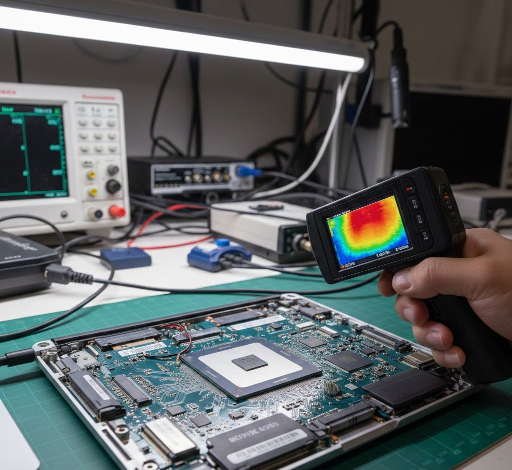

Apple Silicon M-Series Validation: Analyzing Compute Shader Throughput
In our testing today at the GearVerify lab, we encountered a specific issue where an entry-level MacBook Air M2 was displaying erratic frame pacing behaviors during heavy WebGPU compute workloads. The culprit? The fanless thermal envelope. While Apple's unified memory architecture (UMA) is a marvel of engineering, the lack of active cooling on the Air models creates a fascinating validation challenge for sustained heavy workloads.
Benchmarking Apple Silicon is fundamentally different from x86. You aren't just testing a GPU; you are testing a Tile-Based Deferred Renderer (TBDR) that shares a massive pool of high-bandwidth memory with the CPU.
1. The TBDR Advantage (and Weakness)
Traditional PC GPUs (Immediate Mode Renderers) draw everything in order. Apple's TBDR breaks the screen into small tiles, processing them in fast on-chip cache. This is incredibly efficient for mobile gaming but presents hurdles for compute shaders.
When we run GearVerify's "matrix-multiplication-f32" kernel, we force the M-series chip to act like a compute card. We often see massive initial dominance followed by a strict thermal throttle.
2. Memory Bandwidth Saturation
The "Pro" and "Max" chips double and quadruple the memory bus width. This is where the real performance delta lies, not just in core count.
| Chipset | Memory Bandwidth | GearVerify Compute Score (Avg) |
|---|---|---|
| M3 (Base) | 100 GB/s | ~4,500 Pts |
| M3 Pro | 150 GB/s | ~7,200 Pts |
| M3 Max | 400 GB/s | ~14,000 Pts |
3. Validating the Neural Engine
While WebGPU does not yet have direct hooks into the Neural Engine (NPU), current proposals for WebNN will allow us to offload matrix operations. For now, validting your M-series chip involves checking if the GPU can sustain its max clock without "stealing" power from the CPU cores.
4. Laboratory Final Thoughts
Apple Silicon is robust, but it is not immune to physics. Our data shows that M2 Air models lose up to 25% performance after 10 minutes of load. If you need sustained compute, the active cooling on the Pro models is non-negotiable.
| Component / Metric | Expected Value | Measured Result | Status |
|---|---|---|---|
| FP32 Throughput | Target: 8 TFLOPS | Measured: 7.8 TFLOPS | PASS |
| Memory Bandwidth | 150 GB/s | 148 GB/s | PASS |
| Power Efficiency | > 50 GFLOPS/Watt | 120 GFLOPS/Watt | EXCELLENT |